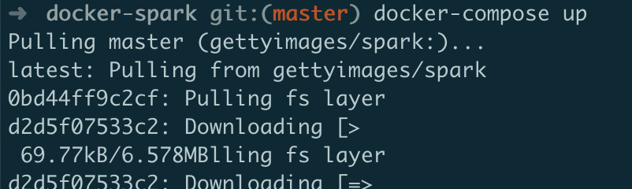
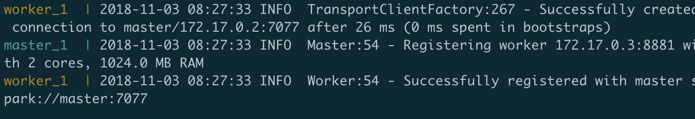
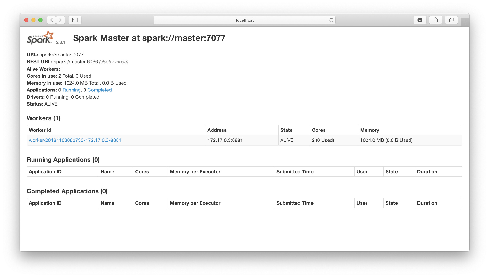
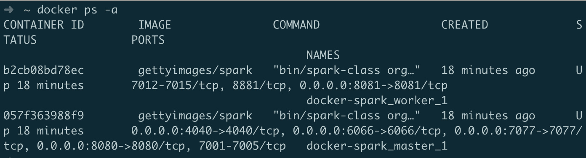
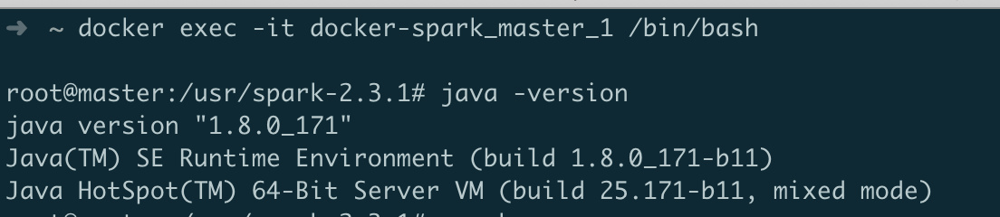
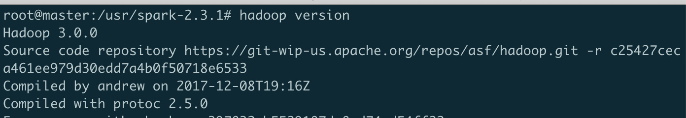
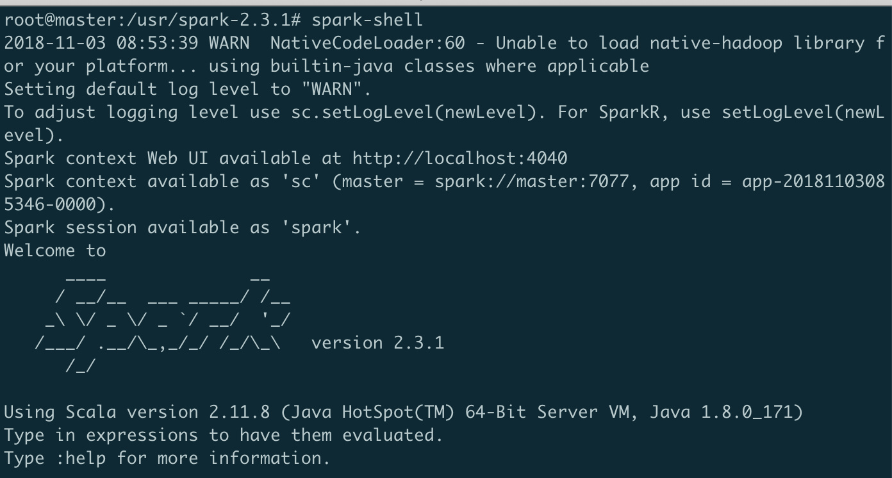
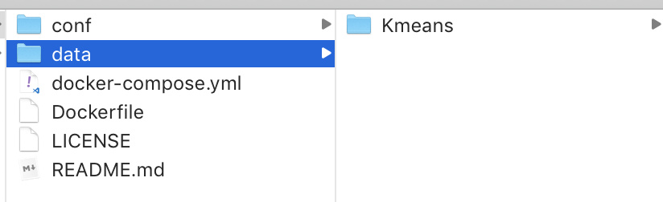
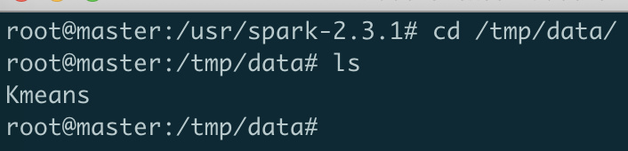
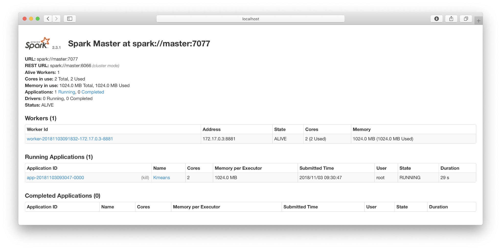

创建Spark集群
首先在命令行下载该项目：
git clone https://github.com/gettyimages/docker-spark.git
在该目录下，输入
compose up:- 
- 等待安装，最后会提示Worker和master都准备好了：
- 
- 在浏览器中输入
localhost:8080，出现如下界面，说明配置成功：- 
- 我们可以使用
docker ps -a命令查看当前运行的容器：- 
集群使用与作业提交
集群使用
- 首先进入master的容器：
docker exec -it docker-spark_master_1 /bin/bash- 注意，使用
exec命令进入容器时，在命令行输入exit不会退出容器，使用attach命令再次进入 - 
- 查看Spark和Hadoop的版本：
hadoop version- 
spark shell- 
- 使用
:quit退出spark-shell。 - 同样也可以查看python的版本，为3.5.3，已经很新了。
作业提交
- 在配置
docker compose时，我们已经将本地文件./data挂载到容器中的/tmp/data下，因此，我们可以先在本地文件中放入需要文件，这里我放入了kmeans的文件：- 
- 在master节点中查看该文件：
- 
- 这已经映射到了hdfs上，我们可以使用
hdfs dfs -cat命令查看： - 这样，我们就可以使用
spark-submit运行我们的程序 - 在浏览器中查看运行的程序：
- 